На сайтеПоследний выпуск на сайте
Остров и мостики; свет и вода без мерцания; здоровье элитных врагов и исправления бота.
Проверено: На сервере подтверждена отправка уведомления о выпуске 20261012-163619: две попытки.
Что проверить
- Пройти остров, причалы и мостики.
- Посмотреть свет и поверхности воды вблизи и вдали.
- Проверить бой с элитными врагами в подземелье.
Это подтверждение относится к прежнему выпущенному пакету. Общий кандидат b4aeec4 на сайте не опубликован.
Ферма · шесть правок
Посадка мышью, будущие награды, репутация Семечкина, доход всей фермы, размер ящиков и новый эффект граблей.
Проверено: Зафиксированы открытое окно семян, посаженный редис и окно репутации Семечкина.
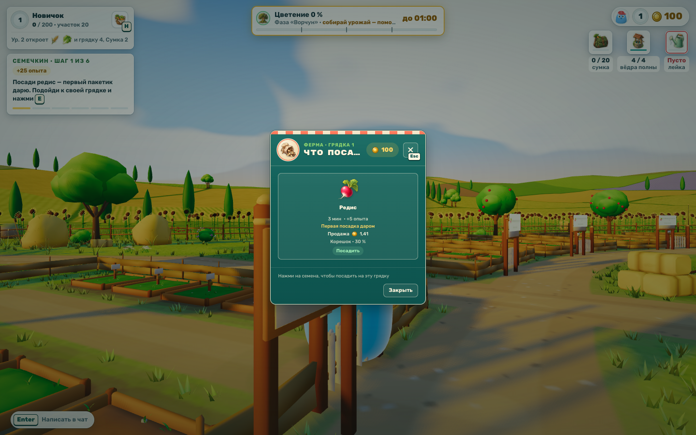
Что проверить
- У пустой грядки открыть семена через E или ЛКМ, выбрать культуру мышью и закрыть окно.
- У Семечкина посмотреть свою репутацию, её источники и бонусы; в хозяйстве — эффект граблей +10 / +15 п.п.
- Сверить ящики 3–5 у новичка и до 10 позже; проверить, что прежние вещи и прогресс сохранены.
300–400 чистыми в час — расчёт для всей развитой фермы: 10 грядок, постоянные улучшения и свой полив. Временные бонусы отдельно. Заголовок окна посадки остаётся локальной правкой.
Крепость · осада
Девять новых противников и устройств, осадные события и сбиваемые метеоры.
Проверено: Башня и батарея остановлены четырьмя попаданиями, гриб и якорь — тремя. События у двух клиентов совпали; метеор сбит, поздний вход восстановил сроки атак.
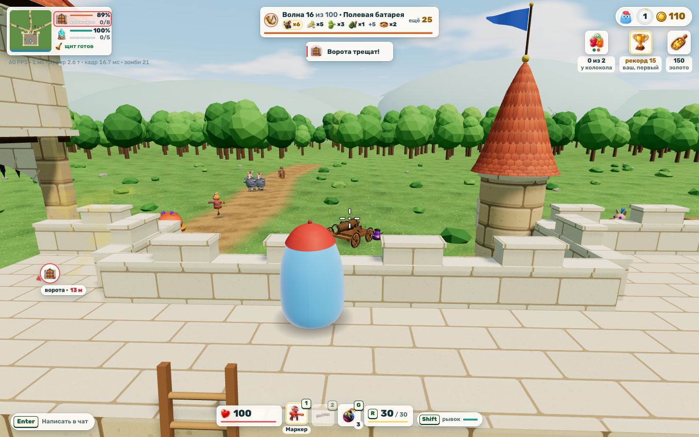
Что проверить
- Проверить все четыре способа противодействия осаде.
- В бою различить девять новых противников и их атаки.
- Завершить приёмку осадных событий на общей сборке.
Для приёмки контрмер использована орда на одного защитника и второй клиент-наблюдатель. Полное прохождение поздних волн вчетвером не проверено. Выпущенное ядро батареи продолжает полёт.
Регата · Белые скалы
Новая длинная трасса катеров и отдельные рекорды её кругов.
Проверено: Через клавиатурное управление пройден полный круг и начат второй. Два клиента в сессии, принудительных сбросов нет; модели, текстуры и камера готовы.
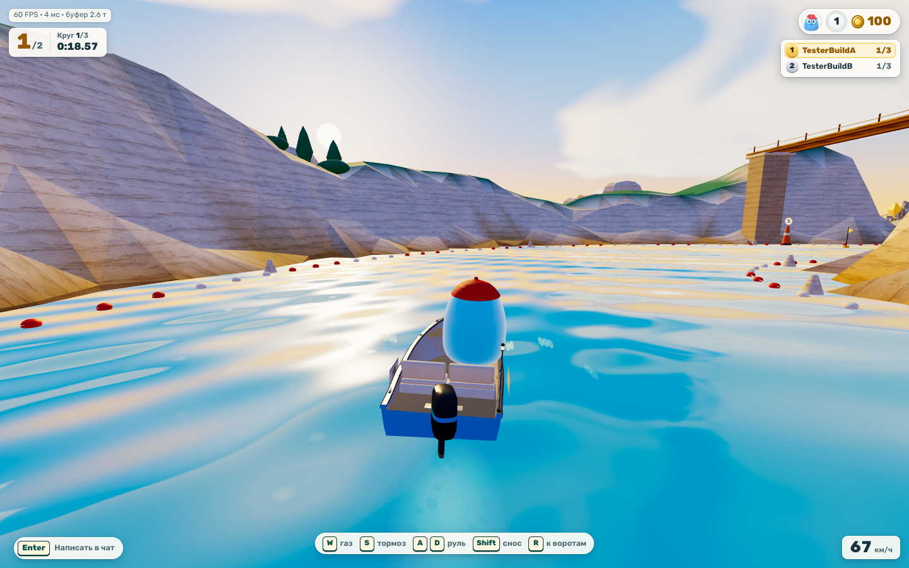
Что проверить
- Пройти старт, полный круг и финиш; проверить движение вдоль берегов.
- Сверить результат заезда и таблицу новых рекордов.
- Убедиться, что прежние рекорды катеров сохранились в профиле.
Проверочный водитель подавал обычные клавиши. Этот прогон подтверждает один круг; финиш всего заезда и награды проверяются отдельно. Прежние времена сохранены отдельно.
Картинг · Портовое кольцо
Длинная портовая трасса третьей версии.
Проверено: Круг за 77,42 с через клавиатурное управление. Два клиента в сессии, принудительных сбросов нет.
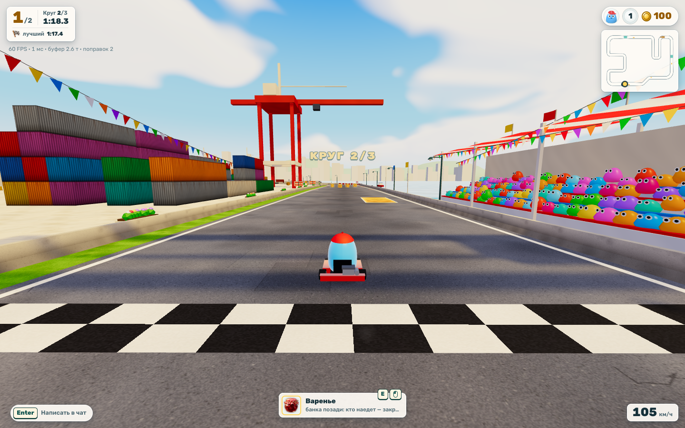
Что проверить
- Проехать полный заезд через каналы, повороты и прыжки.
- Проверить подсчёт кругов, финиш и возврат после падения.
- Сверить новый личный рекорд и отдельную строку прежней трассы.
Проверочный водитель подавал обычные клавиши. Доказан один круг; весь заезд этим прогоном не подтверждён. Общие заезды, победы и подиумы сохраняются.
Картинг · Солнечный серпантин
Длинная трасса третьей версии с подъёмом, шпильками и прыжком через реку.
Проверено: Круг за 84,92 с через клавиатурное управление. Два клиента в сессии, принудительных сбросов нет.
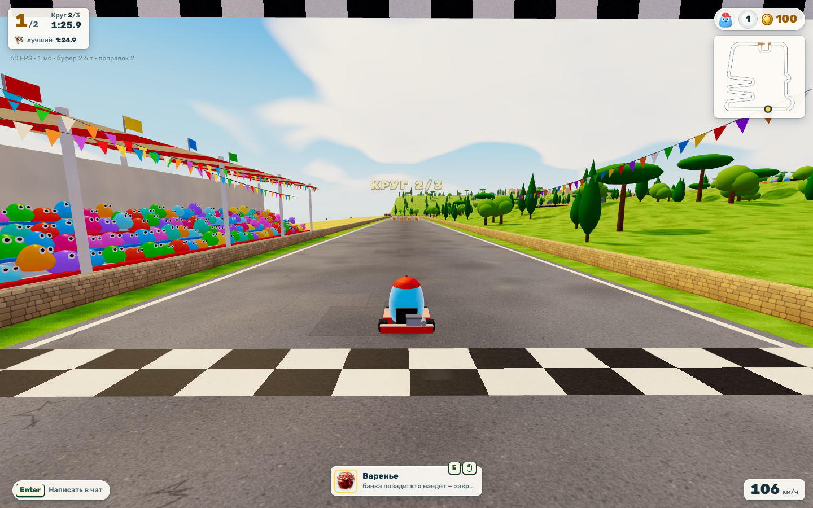
Что проверить
- Пройти подъём, все шпильки и прыжок через реку.
- Проверить подсчёт кругов и завершение заезда.
- Сверить рекорд серпантина: он должен храниться отдельно от порта и прежней версии.
Проверочный водитель подавал обычные клавиши. Доказан один круг; весь заезд этим прогоном не подтверждён. Старые рекорды остаются в профиле.
Выше облаков · 185 метров
Новая высокая каланча с отдельными результатами и медалями.
Проверено: Включён курс 185 м; зафиксированы вход двух игроков, первые прыжки и возвращение после падений.
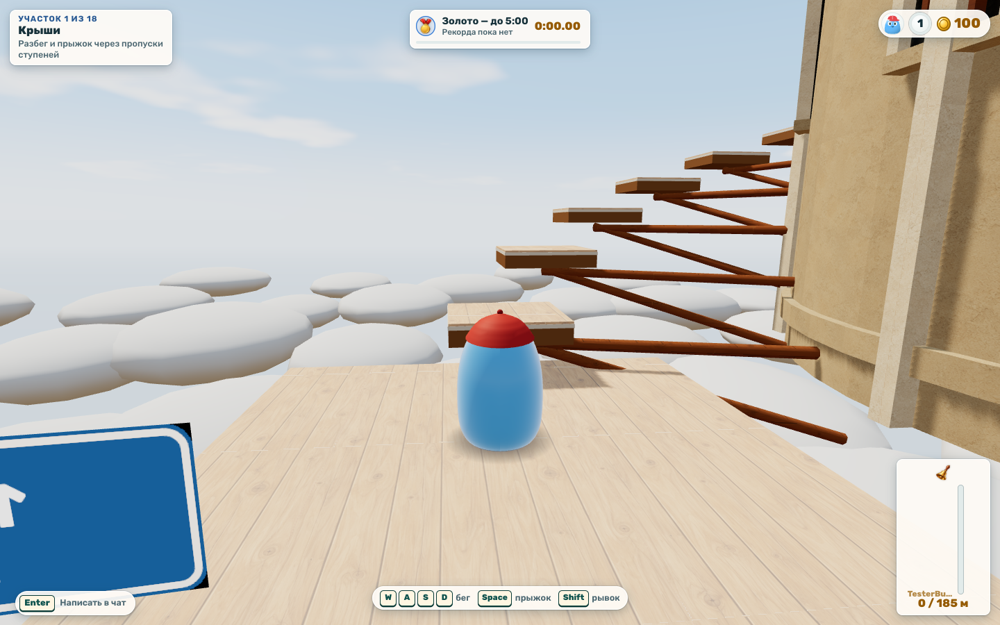
Что проверить
- Подняться через контрольные точки до колокола; проверить возвращение после падения.
- Посмотреть время, медаль и личный рекорд после финиша.
- Проверить архив каланчи 65 м и отсутствие второй дневной выплаты.
Эти материалы подтверждают начало подъёма и совместное присутствие. Полный подъём до колокола ими ещё не подтверждён.
Аквапарк · полоса 3
Новая полоса на воде с паромами, тонущими опорами, батутами, горкой, двумя вертушками и лифтом.
Проверено: Все 33 участка пройдены клавиатурой и мышью; сервер подтвердил финиш за 43,25 с и записал рекорд. Падение и возврат проверены в предыдущей попытке.
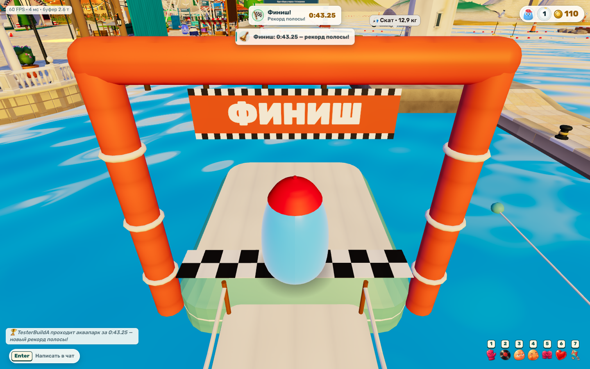
Что проверить
- Пройти от стартового мостика через препятствия до финиша.
- Проверить падение в воду, возврат и повторный старт.
- Сверить новый результат и сохранённый архив прежней полосы.
Это один автоматизированный проход настоящего клиента. Старые результаты сохраняются отдельно.
Воздушный змей · клавиша 7
Каждый игрок может запустить своего змея. Управление — взглядом.
Проверено: Два змея летали одновременно. После изменения взгляда проверен отклик; после сматывания одного остался змей второго игрока.
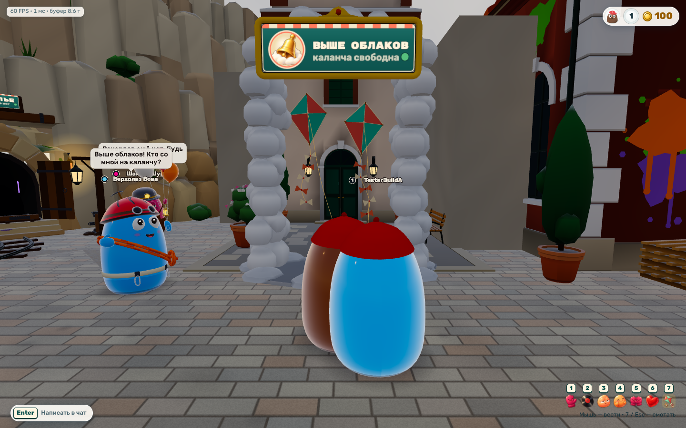
Что проверить
- Нажать 7 и управлять змеем поворотом взгляда.
- Запустить змеев нескольким игрокам одновременно.
- Смотать змея клавишей 7 или Esc и вернуться к прогулке.
Запуск — клавиша 7; управление — взглядом; сматывание — 7 или Esc.
Казино и кафе
Обновлённые здания и их игровые взаимодействия.
Проверено: Пройден ряд всех пяти автоматов, у каждого появилась подсказка. «Червонец» открыт и прокручен; результат учтён сервером.
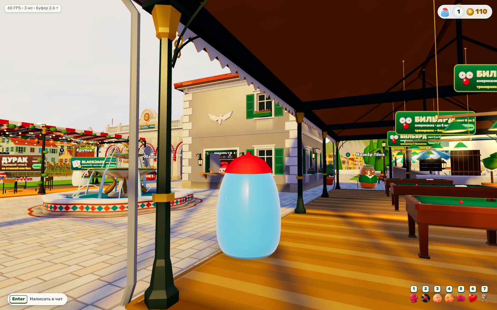
Что проверить
- Осмотреть входы и вывески с пути от точки появления.
- Подойти к столам и автоматам, открыть действия и закрыть окна мышью.
- Проверить свободные проходы, обзор и столкновения у зданий.
Проверены места взаимодействия всех пяти автоматов, прокрутка «Червонца» и проход от бильярда к кафе.
Подземелье · интерфейс
Компактные слоты оружия и бонусов, синергии и справочник построек. Подробности по наведению и фокусу; оружие — между бонусами и Q / Пробел.
Проверено: Наведение и фокус показывают эффект, рецепт и данные построек. Мышью окно закрывается, на 1280×800 помещается целиком. Оружие находится между бонусами и Q / Пробел.
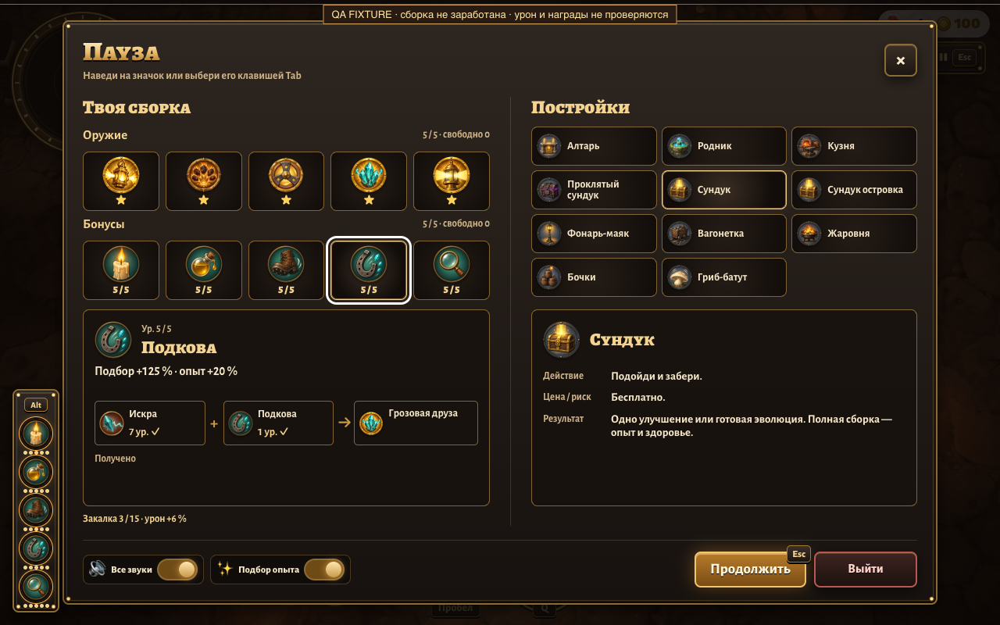
Что проверить
- Войти в бой и проверить читаемость здоровья, опыта и доступных действий.
- Открыть выбор улучшений, нажать карточку и увидеть результат.
- Пройти экран окончания забега и повторный вход.
Заполненная сборка показана в помеченной QA-сцене; это не заработанный забег.
15 направлений HUD
Отдельная страница для сравнения пятнадцати вариантов интерфейса.
Что проверить
- Переключить варианты и игровые состояния.
- Сравнить читаемость и расположение элементов; выбор направления остаётся за тобой.
Наличие варианта здесь не означает его внедрение в игру.
Восемь эволюций · версия 7
Все восемь моделей и анимаций включены в релиз. Маяк над головой, брюшки светлячков светятся.
Проверено: Два набора по пять эволюций проверены на игровом персонаже: движение, атаки и заморозка на паузе. Ошибок клиента и CSP нет.
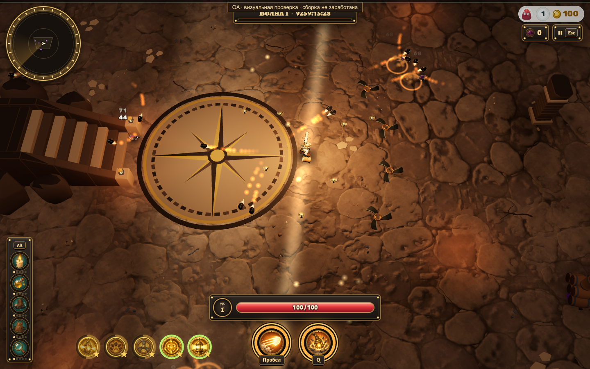
Что проверить
- По очереди открыть все восемь эволюций.
- Посмотреть действие и отличия каждой эволюции.
Стенд r8 позволяет рассмотреть модели отдельно. Подготовленная сборка для визуальной проверки не выдаёт награды.
Вода · версия 3
Готовый стенд воды: A / B / B2 / B3 и трёхсекундные видео для сравнения.
Что проверить
- Переключить A, B, B2 и B3 при одинаковых условиях.
- Посмотреть трёхсекундные видео и сравнить движение у берега и вдали.
Материал готов; нейтральная стоимость GPU не доказана. Новый вид воды в игре не включён.
Крепость · концепт 3
Последняя версия обзора моделей и событий крепости.
Что проверить
- Осмотреть модели и их действия.
- Переключить события и сверить их смысл с игровым кандидатом.
Материал открыт отдельно от игры; это не подтверждение выпуска нового контента.
Прежняя лаборатория мини-игр
Сохранённые прототипы и прежние направления. Можно вернуться к ним для сравнения.
Пейнтбол, бильярд и социальные занятия отменены. Эта ссылка не возвращает их в план работ.
Отменено владельцемПеределка пейнтбола
Предложенное направление отменено владельцем. В новый пакет не входит.
Отменено владельцемПеределка бильярда
Предложенное направление отменено владельцем. В новый пакет не входит.
Отменено владельцемСоциальные занятия
Предложенные новые занятия отменены владельцем. Внедрение не продолжается.
Отменено владельцемОптимизация набережной
Отдельное направление отменено владельцем. Не относится к исправлению мерцания воды в текущем выпуске.